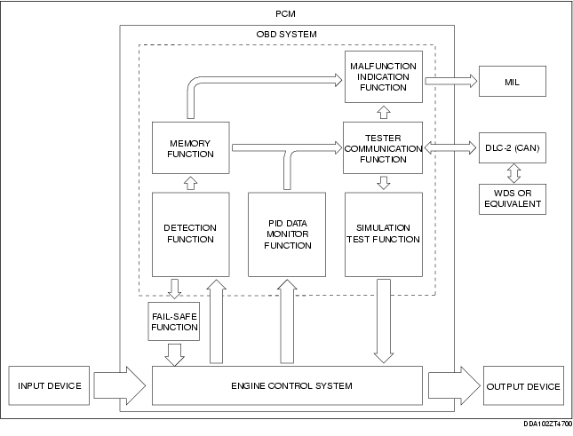

On-board diagnostic outline [ZY] Features Improved serviceability • DTCs adopted • KOEO/KOER self-test function adopted • PID/DATA monitor function adopted • Simulation test function adopted Block Diagram 